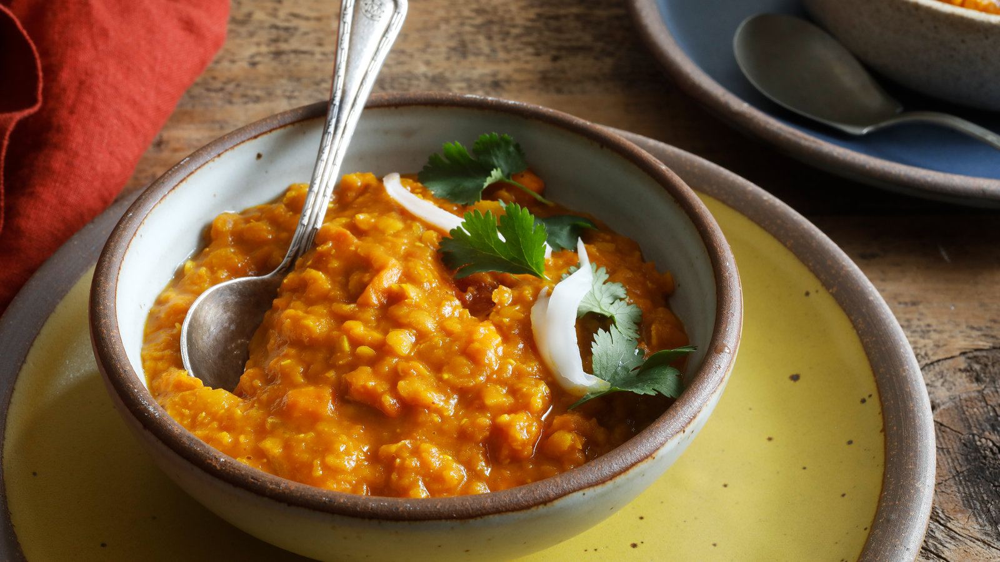

Home
Quick Dahl Recipe

Description:
This is a recipe for a quick dahl made with red lentils.
Dahl is a staple of the Indian kitchen. It can als be made with green lentils
or chick peas and different spices.
Ingredients:
- 200 gr split red lentils
- can of tomatoes
- 1 liter of water
- 3 bay leaves0
- 2 toes of garlic
- 2 teaspoons of ground turmeric
- 2 teaspoons of ground coriander seeds
- 1 teaspoon of ground cumin seeds
- chili flakes to taste
- salt to taste
Steps:
- Add some oil to a pan and press in the garlic and add the bay leaves
and other spices except the salt.
- Fry slowly till the spice start to smell, watch out not to burn the garlic.
- Add in the can of tomatoes, squeeze them with your hand if not chopped
- Simmer for ten minutes.
- Add the lentils and the water, bring to a boil and cook till the lentils
are done, should be about 20 minutes.
- Add salt to taste and serve.